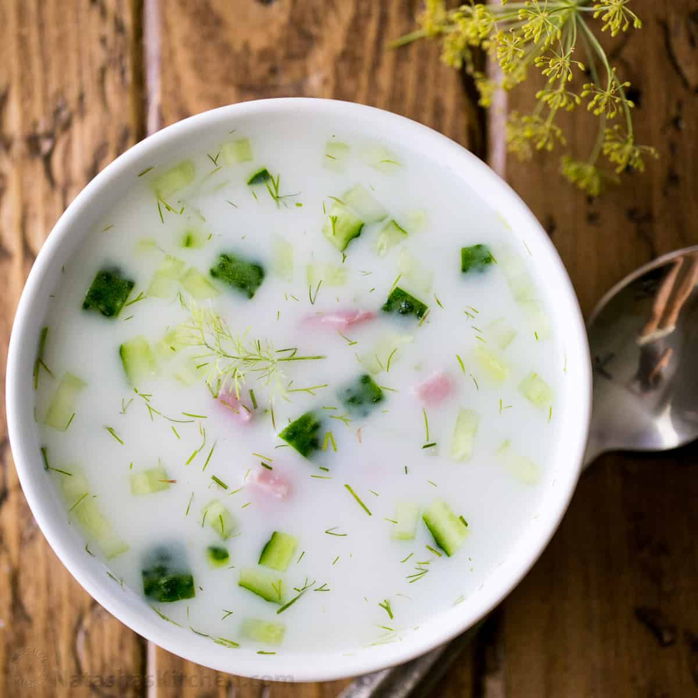

Okroshka Recipe

Loved by many, but also hated by many. From my family, only my father in law likes this - and ofcourse my Uzbek side of the family
The recipe is far from simple, but I gurantee you that it is unlike anything you have ever tried before. It is on par with some Danish foods. Imagine a cold soup, wait.. who even thought it is a good idea??
What does it take to prepare Okroshka?
But if we are being serious, here are the ingredients
- Dill
- Youghurt
- Cold soda (I know what you might be thinking)
- Cucumbers
- Soft Chicken Martadella
- Boiled Eggs
- Boiled Potatoes
Steps
- Finely chop the dill
- Chop the cucumbers, martadella, boiled eggs, and boiled potatoes in squares
- Add them all to a bowl
- Add 2 spoonfulls of youghurt, and slowly pour the cold soda
- Mix the ingredients well
- Finish the dish by adding salt, and enjoy!
Home Page